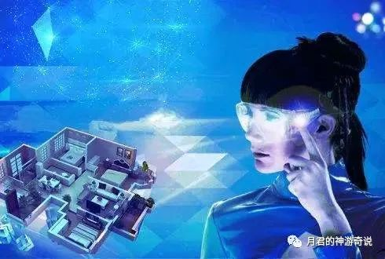

月君：脱离轮回知识解答点(1)
原创 月君 月君的神游奇说 2022-10-08 23:33 发表于北京
原文链接(长) 原文链接(短)
1，为何说物质界不过一场梦？
月君：物质界最初用于对应的物质体验，灵魂进入物质肉体，如同带上了个vr眼镜，只能依赖肉体的六感去看到物质这个世界。
如同人类世界只能依赖vr眼镜，看到vr虚拟世界的事物。
每个人的本质是灵魂，灵魂不死不灭，所以有了投胎轮回之说，所有投胎轮回有生有灭的载体中，无论在什么维度，都只是灵魂在体验不同的游戏，所以说皆是一场游戏，一场梦。
频率越高的灵魂，只能呆在高频的世界，玩高频的游戏。
想玩低频的游戏，则需要灵魂降频，降到低频的世界才能投胎。

2，人为什么要睡觉，不睡觉不行吗？
月君：睡觉是人类定义的词，肉体程序中，有个让肉体睡觉的程序：会不断发出沉睡的能量，使人体在特定或者某条件下触发，使肉体沉睡。
睡觉是灵魂离开肉体玩具，离开物质界世界，叫睡觉，不太正确。
对灵魂来说，应该叫：脱离载体，脱离虚拟物质游戏，灵魂回归自由的精神世界。
3，总感觉世界不真实是怎么回事？无论意识还是身体触摸。都有这个感觉！？
月君：物质世界和肉体被创造出来，本来就是链接一块的，类似全息投影一样。
一个虚构的身体，感受虚构的世界，当然会感觉到很假。
灵魂不单要脱离这个肉体六感的限制，也要脱离使用肉体才能看到的这个物质界，认知物质世界本质是幻相，才能脱离所谓的轮回。
因为是幻相，常有修行人第三眼啊，才能隔空透视看到别人，就是因为世界是虚构的，所以高一级频率的第三眼。可以看穿低维的物质幻相世界。这个基本修行人都该明白这个真理。
不过即使出体了，灵魂状态，看到肉体和玩具一样躺在哪里。
即使有天目了。看穿这个世界了。是能量意识构成的，内心还是不会相信世界是虚伪的。
因为理性和认知会本能不愿意相信，已经成为根深蒂固的潜意识信念。
装睡的人，是叫不醒的。
越醒的人，越深刻彻悟，就是虚构的世界。
引一个经典的话：凡有所相，皆是虚妄。
特意提醒：轮回也是根据世界，虚构的程序。业力也是如此，皆为游戏规则。
投胎=买门票进的景点的游客。
轮回=持续生活在景点的游客，人类就是喜欢在这里呆着，沉迷这个vr虚拟游戏，自然有所执。久而久之，忘记自己身为真实灵魂的身份，肉体只是建立的游戏角色。
4，为何感觉这里堵？哪里堵？身体也堵，心也堵！执念太多？
月君：堵有两种，身体和心灵。
1，是负面能量和病气引起的，长时间的不良饮食和生活习惯造成，身体虚弱，身体清理对应的功能下降，垃圾清理不过来，累积在了身体，自然堵！
改变习惯，自然恢复阳光的身体。不病不堵。
2，心念和情绪造成，长时间执着某个人事物情，对其有恶念，攻击性，伤害性。先开始从意识内创造形成一个负面能量团，随后传递到灵体，再传递到肉体物质化。病化。
如同练功一样，练丹田，纯正光明的意识，就形成光团，气团，对自己有益。
创造了负面的信念 负面能量团。自然相当自己攻击自己，足不出户，什么也不做，也可自己伤自己。
意识堵=身体堵。
意识＞思想＞行为。意识有什么心念和情绪行为。创造了什么结果，都会在身体上和物质界显化出来结果。
正向创造正向的结果，负向创造负向的结果。你和世界是一体的，你对应的生活环境，人事物，都是你自己创造出来的。
观察自己：从平时自己的思想行为，生活上，身体上去找原因，形成良性循环的习惯，而不是恶性循环的习惯。对自己有伤害性的习惯。
5，造物主真的无所不能吗？
月君：造物主在已创造范围内是全知全能的，还没有创造的+正在创造的，它在接收这个可能性。
创造无穷无尽，对应造物主全知全能的本事在+1+1+1无限升级中……
这个可能性，就为他汇集了无所不能的本事。
从本人这几年深度合一大道体验来说：
大道创造有限是为了验证自己的无限可能性。
表现为空无，虚无，不创造时：是为了感受自己的全我性、全一性，即无我不受任何创造事物以及定义的限制。
两者为一体关系，万事万物都是大道的表现可能性，体现万般变化，万般妙有的无限性。
6，怎么能得道脱离轮回，守道而行？彻悟不迷失？
月君：
1，认知自己是道(合道)。
2，认知万事万物都是自己(道）显化而成，都是虚妄幻相也。(合道中亲自证见）
3，保持这个状态，就是得道状态。
4，深度保持这个状态，可守道而行，永不离道，超脱一切，脱离虚构的轮回幻相。
5，深度彻悟和觉醒，认知自己=道=万事万物=一场游戏=一场梦=脱离一切自己创造的幻相。
欢迎转发分享，关注本公众号，认知修行中的见闻，真理和经验。